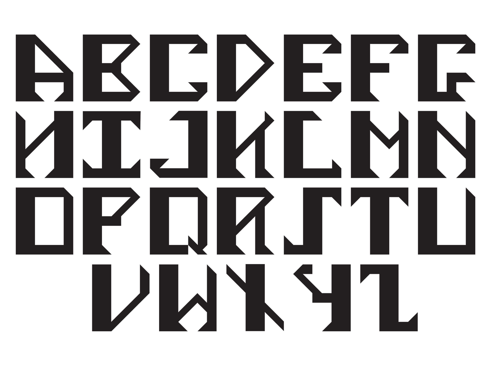
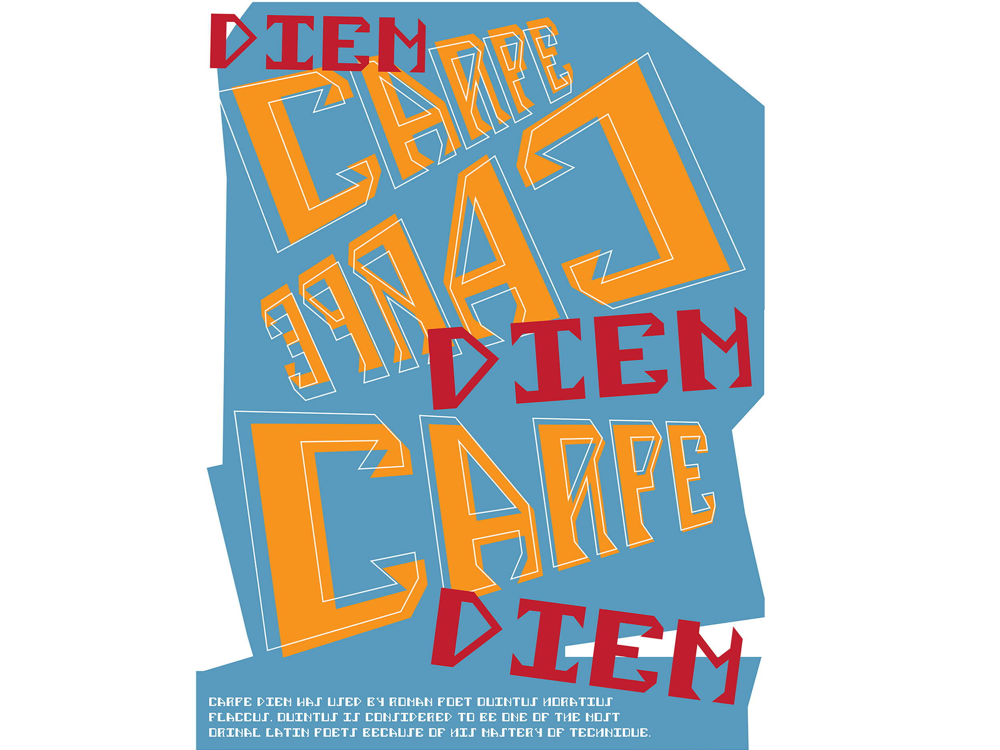
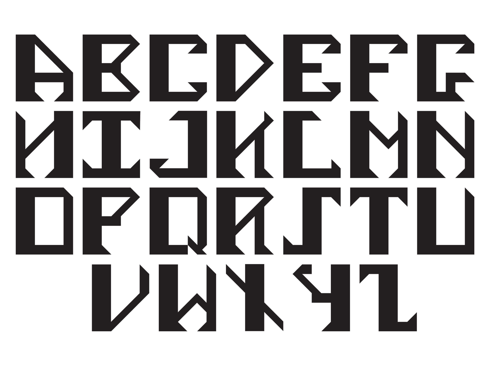
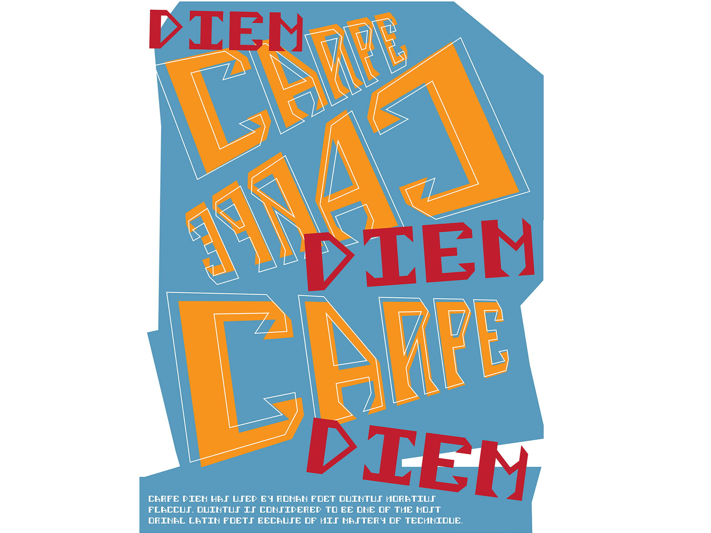

Using a 7x6 grid, I developed a modular typeface inspired by Saul Bass’s artwork. I drew on Saul Bass’s use of bold expressive lettering and angular shapes. I then implemented these themes in the typeface through the direction of serifs and various weights in the letter’s stems. I developed a system using my grid to ensure that the alphabet came out cohesive and uniform. The poster was created to display the typeface and the variety of ways in which it can be used. I chose the quote ‘Carpe Diem’ as many people can relate to its meaning and I felt that visually, Latin could be displayed using a more abstract approach. The colour pallet was chosen based on Saul Bass’s artwork to further draw from the initial inspiration of the typeface, as well as the background shape is an abstraction created using angles found in the typeface.
 


